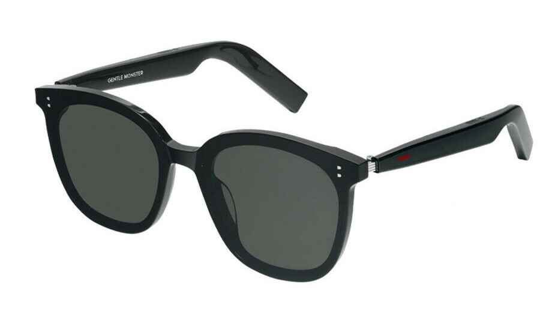

Glasses typically refer to optical devices worn on the face to enhance or correct vision. They consist of lenses mounted in a frame that rests on the nose and ears. Glasses can correct refractive errors like nearsightedness, farsightedness, and astigmatism. They come in various styles, including prescription glasses for vision correction, sunglasses for eye protection from sunlight, and fashion glasses as accessories. The lenses can be made from glass or plastic and may have coatings for additional features like anti-glare or UV protection. Additionally, glasses can be an essential accessory for those with visual impairments or a fashion statement for individuals without vision issues.
Glasses

Vision Glasses
Vision glasses are specialized eyewear designed to correct or enhance an individual's vision. They come in various types, each serving a unique purpose:
- Prescription Glasses: Customized glasses with lenses tailored to address specific refractive errors, providing clear vision for those with nearsightedness, farsightedness, astigmatism, and other conditions.
- Reading Glasses: Specifically designed for close-up tasks such as reading. They offer magnification to aid in focusing on small print.
- Computer Glasses: Designed to reduce eye strain and discomfort caused by prolonged exposure to digital screens. They often have an anti-reflective coating.
- Bifocals and Multifocals: Glasses with lenses that have two or more prescriptions, allowing individuals to see clearly at different distances.

Sunglasses
Sunglasses are a type of eyewear specifically designed to protect the eyes from bright sunlight and harmful UV rays. Key features of sunglasses include:
- Tinted Lenses: Reduce brightness and glare from the sun.
- UV Protection: Shield the eyes from harmful ultraviolet (UV) rays.
- Fashion Statement: Sunglasses are also worn as a fashion accessory.
Choosing the right glasses involves considering individual vision needs, lifestyle, and personal style!